“The water cooler is where inspiration goes to hydrate.”
It’s the modern campfire — a place where gossip, theories, and mild existential crises circulate with the ice cubes. You come for water, stay for conversation, and leave somehow both refreshed and slightly behind on work. The water cooler reminds us that connection doesn’t need a meeting invite. Sometimes the best ideas — and worst jokes — happen between sips. Of course, it also reminds us that no one ever refills it correctly, proving teamwork is harder than thirst. So today, gather ‘round the office oasis. Share a story, a laugh, or a rumor that’s 40% true. Work will wait — hydration is half the job anyway.